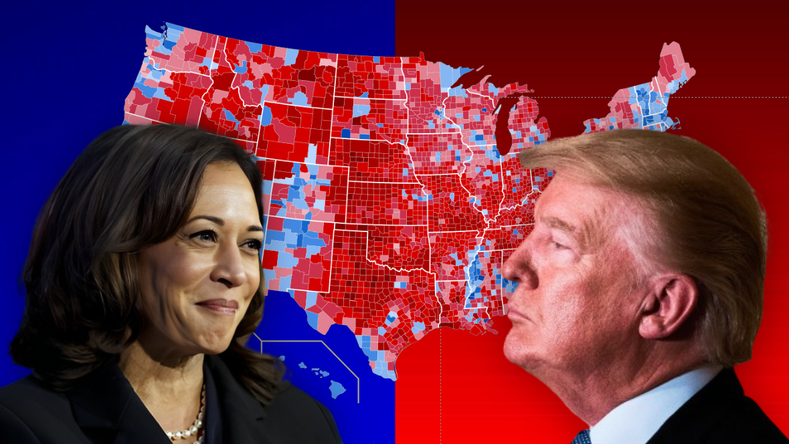

Explainer
WHAT ARE ELECTORAL COLLEGE VOTES?
Electoral college votes—explained.
POLITICS


Electoral college votes—explained.
A breakdown of the U.S. Government: how it works and what it does.

An opinion, based on facts, on why Trump won the 2024 U.S. Election.

A breakdown of the key issues at play in the 2024 U.S. Election.
An opinion on the short and long term impacts of the 2024 U.S. Election.